제품 상세페이지 디자인
운무산맥 · 오브제형 프리미엄 가습기 상세페이지
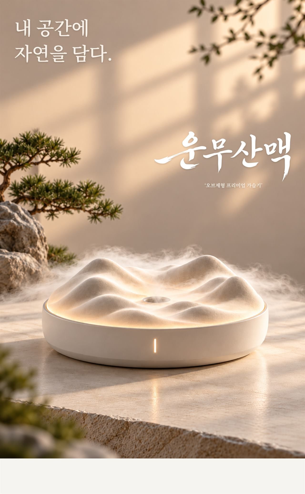
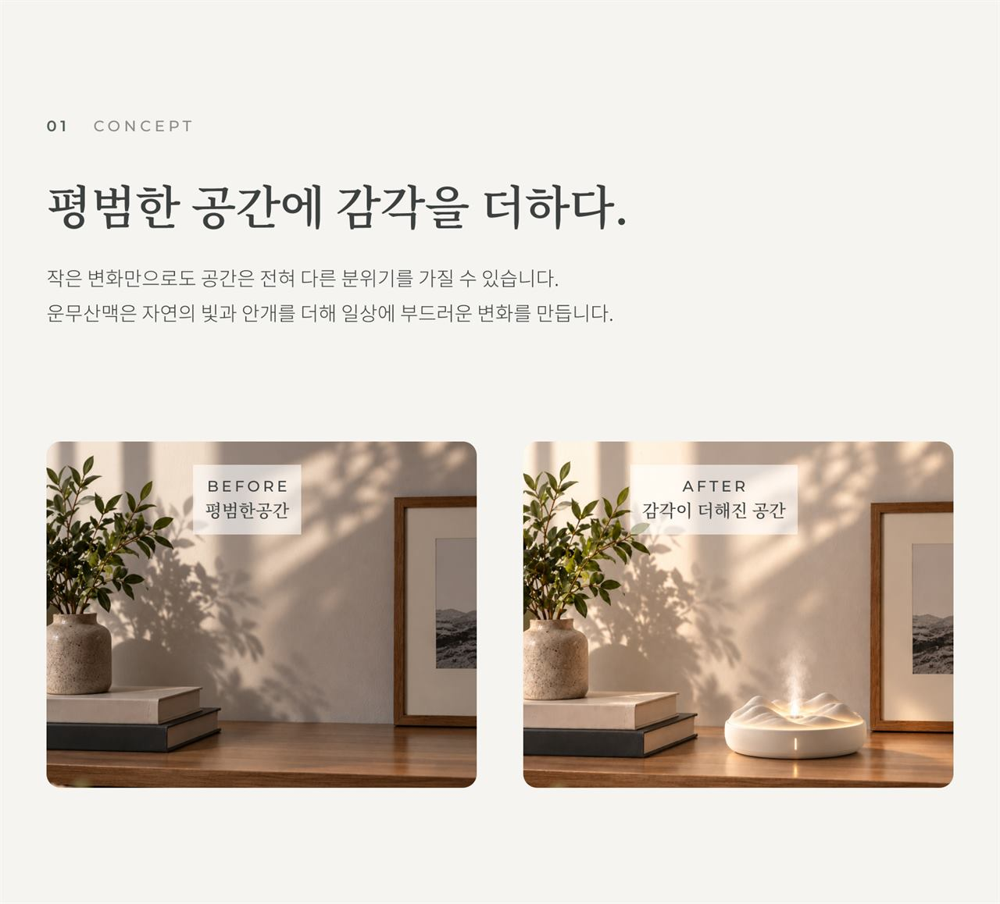
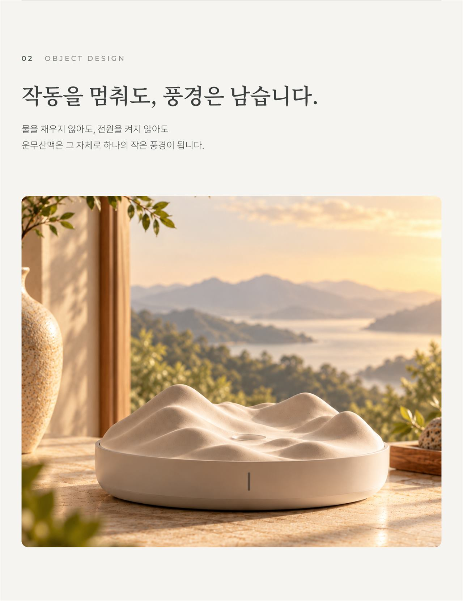
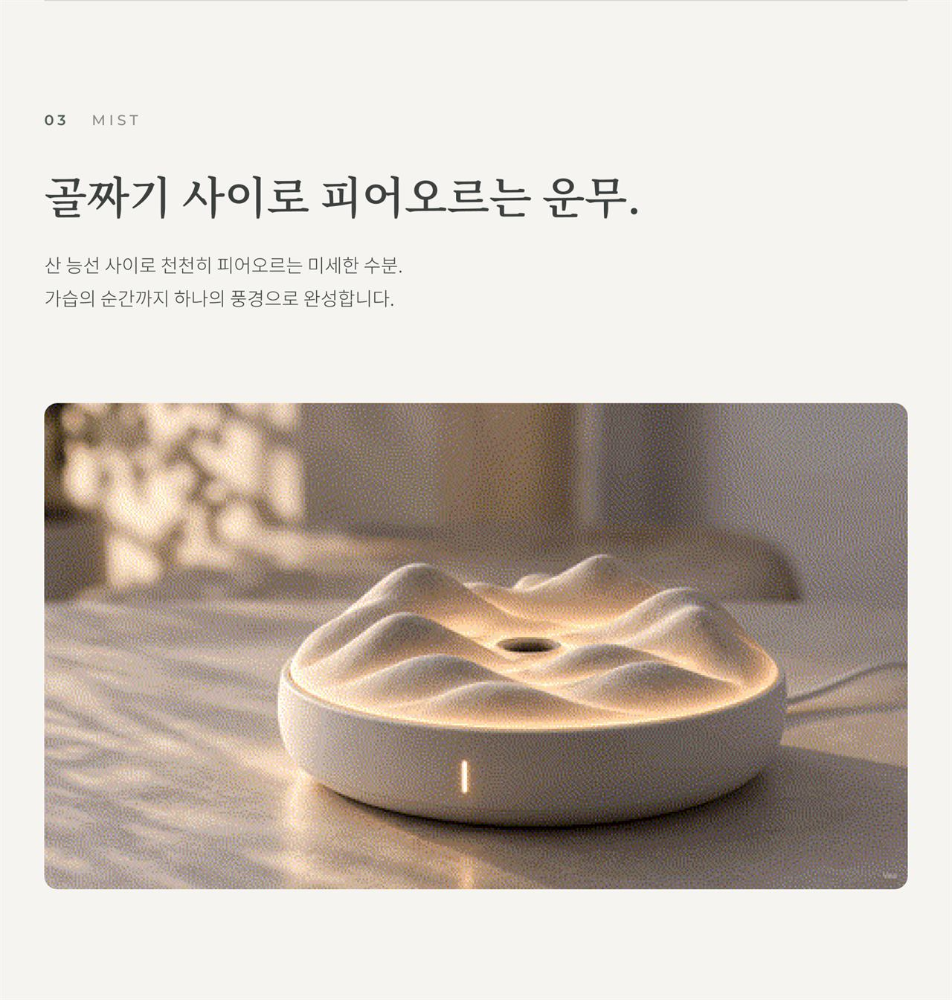
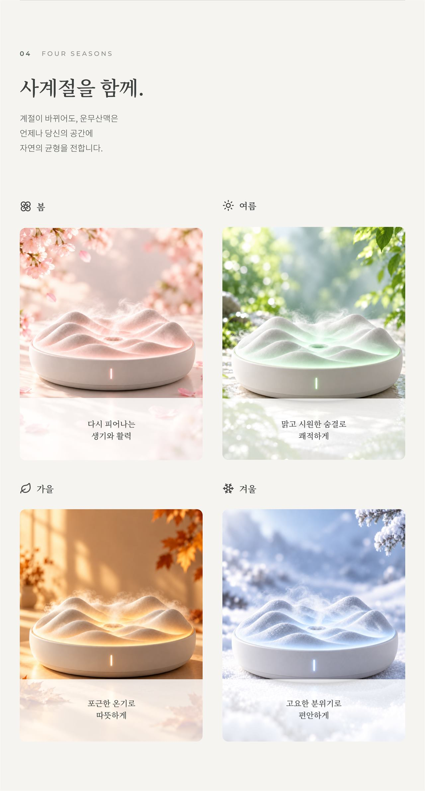
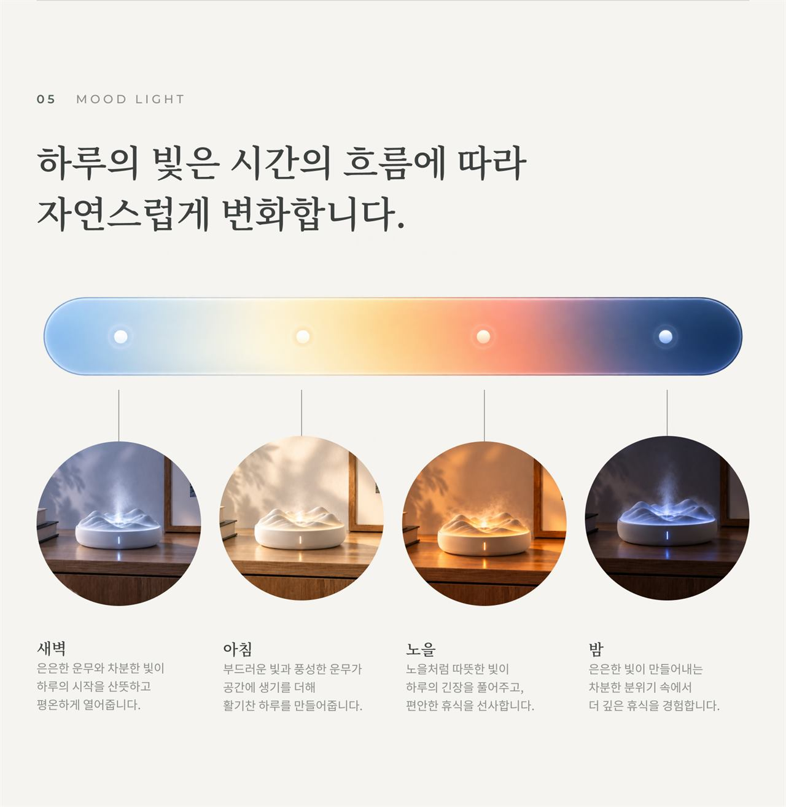
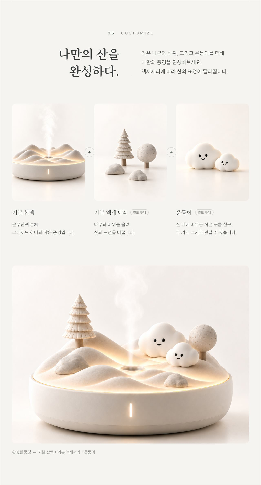
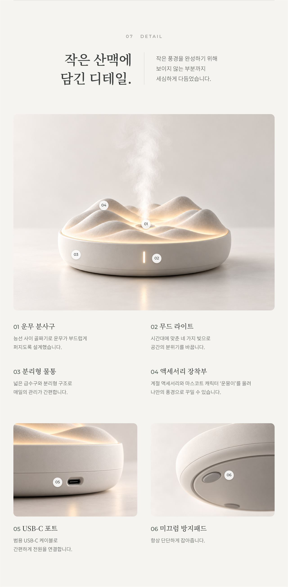
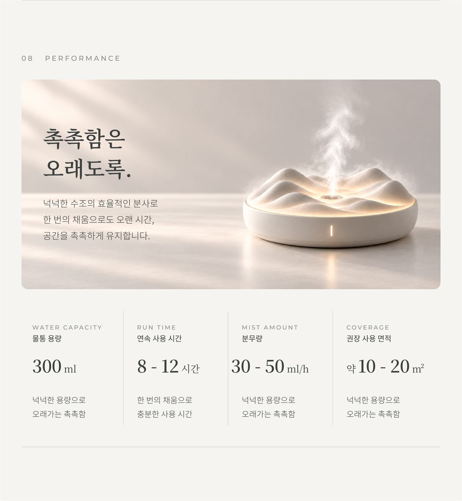
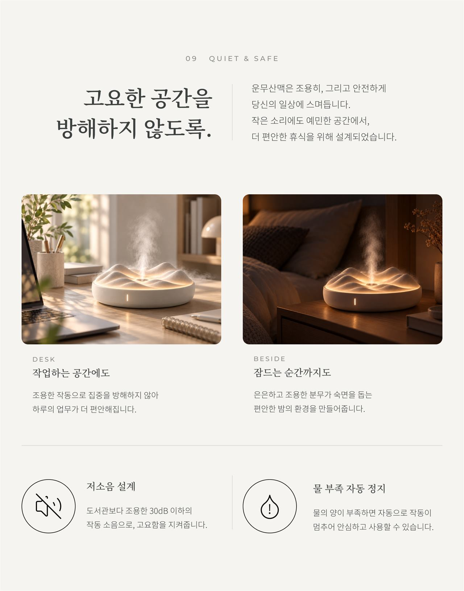
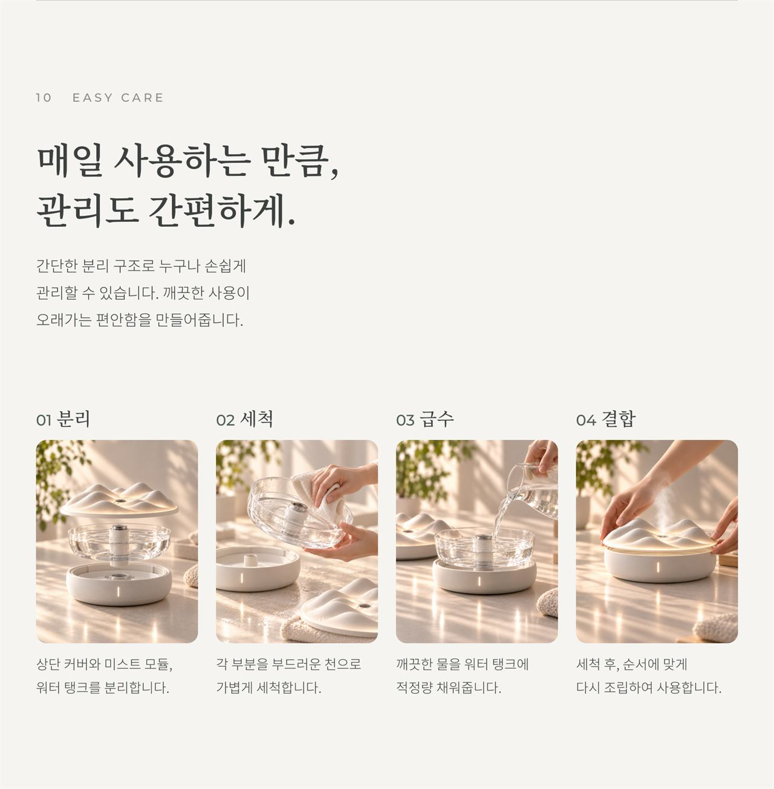
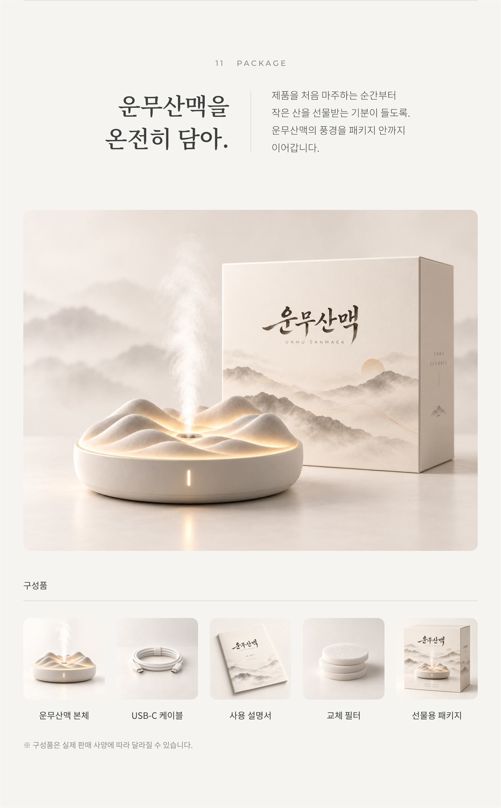
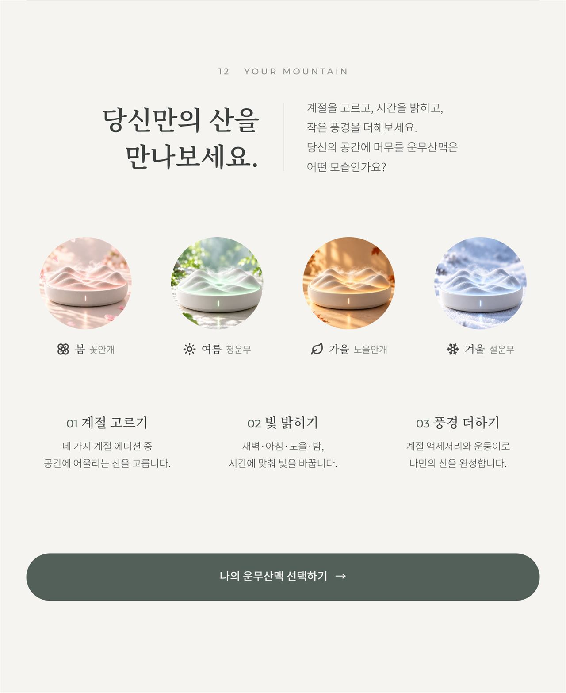
작업 설명을 정리하고 있습니다. 상세페이지를 먼저 감상해 주세요.
프로젝트 개요Overview
‘운무산맥’은 가습기 제품 디자인부터 상세페이지까지 직접 기획해 본 가상의 브랜드입니다. 산맥 모양의 오브제형 가습기를 계절(사계절 에디션), 빛(무드 라이트), 풍경(액세서리·운뭉이) 세 가지 선택지로 소개하는 12개 섹션의 상세페이지로 구성했습니다.
담당 작업Role
혼자 진행한 개인 작업으로, 제품 디자인과 상세페이지 기획, 섹션 구성, 레이아웃 디자인을 모두 맡았습니다.
- Figma
- ChatGPT
- Claude
제작 목적Purpose
기능만을 위한 가습기가 아니라 공간에 두고 싶은 하나의 오브제라는 점을 전하는 것, 그리고 계절과 빛과 작은 풍경을 골라 ‘나만의 산’을 완성하는 경험이 구매 선택으로 자연스럽게 이어지도록 하는 것을 목표로 했습니다.
제작 판단Decisions
제작 과정Process
AI 활용 범위AI Usage
AI가 도운 부분 — 제품 연출 이미지는 ChatGPT로 생성했고, 카피 초안과 문장 다듬기에 ChatGPT와 Claude를 활용했습니다.
직접 한 부분 — 가습기 제품 디자인을 직접 했습니다. 콘셉트와 12개 섹션의 순서를 정하고, 생성된 이미지 중 사용할 컷을 골랐습니다. 레이아웃과 타이포그래피를 Figma에서 직접 디자인했고, 최종 문구도 직접 확정했습니다.